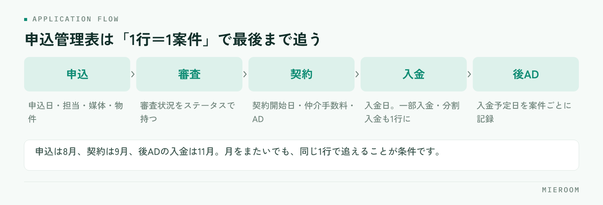

賃貸仲介の申込管理表は、申込から審査・契約・入金・後ADまでを1行で追えるように作ると、取りこぼしが目に見えて減ります。多くの店舗で漏れが出るのは担当者の注意不足ではなく、表の設計と更新ルールに原因があります。この記事では、必須項目の設計、Excelで漏れが出る原因、運用ルール、ツール化を考える目安を順に解説します。
申込管理表の役割：申込から後ADまでを「1行で追う」
申込管理表は、申込が入った瞬間から最後の入金（後AD）までの案件の現在地と、お金の入り具合を一目で見るための表です。来店前を追う反響管理表、来店から申込までを追う接客管理表とは役割が違い、申込より後の工程を一件も落とさないことに集中させます。

基本の形は「1行＝1案件」です。1件の申込が、審査・契約・仲介手数料の入金・AD（広告料）の入金・後ADの入金と進むたびに、同じ行の右側が埋まっていきます。行が分かれると、その案件の全体像が追えなくなります。
この表は、契約ベースの数字と入金ベースの確定売上を分けて見る土台にもなります。店長が週次で確認する指標（審査中の件数、入金予定を過ぎた未入金など）も、すべてこの表から取り出します。
必須項目の設計：列はこの順番で並べる
列は、案件が進む順に左から右へ並べます。自由記述は備考の1列だけにし、それ以外は「日付」「数字」「選択肢」のどれかに揃えるのが設計の基本です。
- 基本情報：申込日／担当者／媒体（反響元）／顧客名／物件名・号室／賃料／管理会社またはオーナー
- 進行：審査状況（申込・審査中・承認・否決・キャンセル）／契約予定日／契約開始日
- お金：仲介手数料／AD／後ADの有無と入金予定日／入金日／入金額／未入金残
- 付帯：引越し／ライフライン（電気・ガス・水道・ネット）／火災保険の提案と成約
- 管理：ステータス／最終更新日／備考
ポイントは、お金の列を「予定日・入金日・金額・残額」の組で持つことです。入金済みか未入金かを1列で表さないことで、一部入金や分割入金が見えるようになります。付帯サービスの列があると、契約後の提案漏れも同じ表で追えます。
Excelで漏れが出る4つの原因
Excelの申込管理表で漏れが出る原因は、次の4つに集約されます。
- 更新者が分散している：担当者ごとに更新すると、上書きや「最新版がどれか分からない」が起きます。入金の確認は通帳を見る人しかできないため、担当者任せの表は入金の列が空になりがちです。
- ステータスが文字入力になっている：「審査中」「審査中！」「しんさちゅう」が混ざると、フィルタも集計も効きません。選択肢にしていない表は、件数を数える段階で狂います。
- 入金と売上が混在している：契約した時点で売上に入れてしまうと、未入金や一部入金が売上の中に埋もれます。後ADは特に入金までの期間が長く、表から消えやすい項目です。
- 月をまたぐ案件が分断される：申込は8月、契約は9月、後ADの入金は11月というのが賃貸仲介の普通です。月別にシートを分けると、1件の案件が3か所に散ります。
後ADと一部入金の落とし穴については、「後AD」を制する者が、賃貸仲介の利益を制する。で詳しく解説しています。
運用ルール：誰が・いつ・何を更新するか
表の設計が正しくても、更新のルールがなければ漏れは戻ってきます。決めるのは「誰が」「いつ」「何を」の3つだけです。
- 誰が：申込・審査・契約の列は担当者、入金の列は入金を確認できる人（事務や店長）が更新する。1つの列に更新者を2人置かない
- いつ：申込当日・審査結果が出た当日・契約当日・入金を確認した当日。「週末にまとめて」を認めない
- 何を：ステータスと日付は必ずセットで更新する。ステータスだけ進めて日付が空の行は、後で必ず迷う
週次で店長が見る指標は、次の5つに絞ります。
- 審査中の件数と、審査に入ってから日数が経っている案件
- 契約予定日を過ぎて契約していない案件
- 入金予定日を過ぎた未入金（仲介手数料・AD・後ADのどれが未入金か）
- 後ADの入金予定が今月・来月にある案件
- 付帯サービスの提案率
月次では、入金済みの確定売上と、未入金の見込み売上を分けて締めることで、「契約は多いのに資金が回らない」状態を早く察知できます。
テンプレートを作るときのチェックリスト
申込管理表のテンプレートを自作するなら、次の項目を満たしているかを確認してください。
- 1行＝1案件になっている（工程ごとに行を分けていない）
- ステータスと審査状況は選択肢（ドロップダウン）で入力する
- お金の列は「予定日・入金日・金額・残額」の組で持っている
- 後ADの列が仲介手数料やADと分かれている
- 引越し・ライフライン・火災保険の付帯列がある
- 月別にシートを分けず、申込日や契約開始日のフィルタで月を切る
- 最終更新日と更新者の列がある
- 入力用の表と集計用の表を分けている（集計式を入力表に埋め込まない）
このうち特に効くのは「1行＝1案件」と「お金の列を組で持つ」の2つです。既存の表を作り直す余裕がなければ、まずこの2点だけ直してください。それだけで、未入金の一覧をフィルタ1回で出せる状態になります。
ツール化を考える目安
Excelで回せる規模には限界があります。次の状態が続くなら、ツール化を検討する時期です。
- 更新する人が複数いて、最新版がどれか分からなくなる
- 店舗が複数あり、店舗ごとに表の形が違う
- 後ADや一部入金の追跡が、月に何度も漏れる
- 反響・接客・申込が別々のファイルで、案件を探すのに時間がかかる
- 月末の集計に半日以上かかっている
ツールは、この記事の項目設計がそのまま実現できるかを基準に選んでください。確かめる順番は三つです。後ADの欄が仲介手数料やADと分かれているか、入金が「予定日・入金日・金額・残額」の組で持てるか、ステータスが選択肢になっているか。三つとも画面にあれば、いまの表の運用をほぼそのまま移せます。逆に一つでも欠けると、移した先でExcelを併用することになり、二重入力に逆戻りします。Excelから移行するときの考え方はExcel管理からの卒業。SaaS導入で変わる5つのこと。、ツールの選び方全般は賃貸仲介の業務改善ツール完全ガイドにまとめています。
まとめ：漏れは注意力ではなく、仕組みで防ぐ
賃貸仲介の申込管理表は、申込から後ADまでを1行で追う設計と、誰が・いつ・何を更新するかのルールがそろって初めて機能します。Excelで漏れが出る原因は、更新者の分散・文字のステータス・入金と売上の混在・月またぎの分断の4つでした。まずは既存の表を「1行＝1案件」「お金の列を組で持つ」の2点から直し、週次で見る指標を決めてください。漏れは注意力ではなく仕組みで防ぐものです。
Excelの限界を測る簡単な方法は、「自店舗の未入金が今いくらあるか」をその場で一覧にできるかを試すことです。ここで手が止まるなら、担当者ではなく表の設計に原因があります。
ミエルームは、この項目設計をそのまま画面にした賃貸仲介向けの業務管理SaaSです。申込管理表を軸に、後ADを案件ごとに記録し、一部入金・分割入金に対応し、確定売上と見込みを分けて集計します。申込フォームからの自動取込や、反響管理・接客管理との連動もあるため、申込から入金までを1行で追う運用が転記なしで続きます。いまお使いの管理表を持ち込んで、そのまま置き換えられるかを試すこともできますので、気になる点があればお気軽にお問い合わせください。